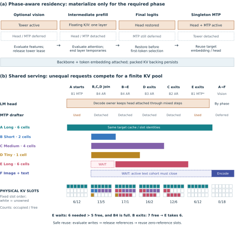

completed context
30,720 baseline positions → 212,992 JustFit positions on the same 24 GiB laptop.
192K input + 16K output · n=3 · peak range 20,960–20,977 MiBApple M4 Pro · 24 GiB unified memory · Qwen3.8-27B MXFP4
JustFit coordinates compressed KV execution, component residency, and request-state transitions so temporary work does not erase the memory saved by compression.
The capacity stack
Quantizing KV is only the first step. Usable context is set by every allocation that overlaps it.
The live budget includes weights, resident KV pages, floating-point attention operands, prefill workspace, output state, speculative state, and component lifetimes. JustFit treats their overlap as the systems problem.
Measured results
Every capacity row includes the requested generated tail. Concurrent totals are aggregate across requests.
30,720 baseline positions → 212,992 JustFit positions on the same 24 GiB laptop.
192K input + 16K output · n=3 · peak range 20,960–20,977 MiBTwo simultaneous 96K-input + 16K-output requests complete at 12.55 aggregate tok/s.
20,310 MiB peak · common-active-interval TGOne 128K+12K stream and three 8K+12K streams complete together.
20.78 aggregate tok/s · 11.55 wall-output tok/sPaged TQ4 generates 696,834 reasoning tokens at 15.04 token-weighted tok/s.
Integrated runtime check · not 200K-context comprehensionOne memory budget
Page-addressed Q4 KV, page-native decode and short verification, plus direct-inverse reconstruction of only the current layer's floating-point attention operands.
The output head, vision tower, and singleton drafter attach when required, stay while leased, and detach only at scheduler-selected safe boundaries.
A request can move MTP → batched AR → MTP without migrating its surviving target KV. Completed and cancelled rows return page IDs after evaluation.
Interactive serving schematic
A begins alone and owns six equal-capacity page groups.
A's six page IDs remain fixed across serving-mode changes.
Schematic, not a combined measured vision+B4+200K trace. Slots are equal-capacity page groups; returning a slot does not free the resident pool backing.

Run and reproduce
The fork includes a component-preparation helper, explicit server launcher, streaming workload client, and path-sanitized result JSON.
git checkout a30c0cf39fd4c3367f3bf381df192851cfaa1801Measured runtime provenance: 143967472416aece96eeae392eaf931426acad3c. The mlx_vlm/ tree is identical between these commits.
python examples/justfit/prepare_components.py --model "$MODEL_PATH" --output ./justfit-componentsLANES=1 KV_CAPACITY=32768 MAX_TOKENS=512 examples/justfit/run_server.shCommit, checkpoint hashes, effective environment, stream completion, process peak, failures, and page-reuse postflight.